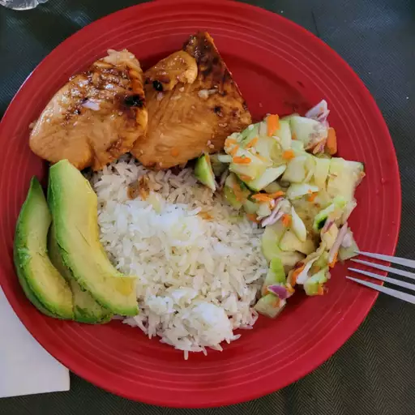

Teriyaki Salmon

Description
This teriyaki salmon, with its irresistible sweet and savory marinade, will quickly become a staple in your
dinner rotation. It's sure to please even the pickiest eaters at your table!
Ingredients
- 1/4 cup sesame oil
- 1/4 cup lemon juice
- 1/4 cup soy sauce
- 2 tablespoons brown sugar, or more to taste
- 1 tablespoon sesame seeds
- 1 teaspoon ground mustard
- 2 teaspoon ground ginger
- 1/4 teaspoon garlic powder
- 4 (6 ounce) salmon steaks
Steps
- Mix sesame oil, lemon juice, soy sauce, brown sugar, sesame seeds, ground mustard, ginger, and garlic powder
in a small saucepan over low heat. Bring to a simmer, stirring until sugar has dissolved. Set aside 1/2 cup
of marinade for basting.
- Pour remaining marinade into a resealable plastic bag. Add salmon steaks, coat with marinade, squeeze out
excess air, and seal the bag. Marinate in the refrigerator for 1 to 2 hours.
- Set an oven rack about 6 inches from the heat source and preheat the oven's broiler.
- Broil salmon steaks under the preheated broiler for 5 minutes, brushing salmon with reserved marinade. Turn
and continue to broil until salmon is opaque and flakes easily, about 5 more minutes. Brush with marinade.
[Home Page]